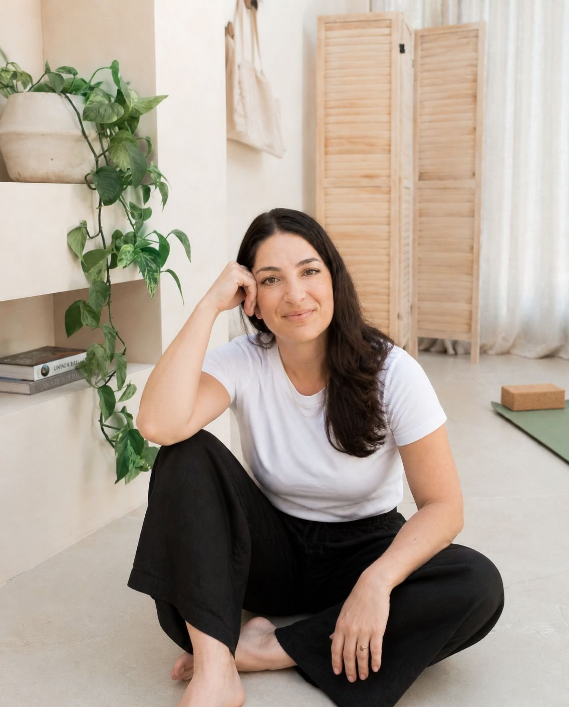

Breathwork in Sydney for ADHD folks
I'm Lucine. I guide gentle breathwork for ADHD folks who are tired, wired and running on empty. I'm based in Mosman on Sydney's lower north shore, and I run sessions in person and online.

What a session is like
You lie down, close your eyes and get comfortable. Then I talk you through slow, gentle breathing.
Around 40 minutes is breathing. There's time to set an intention before, and time to talk after.
You don't need to sit still or get it right. You don't need any experience. Your body does the work.
No pushing. No forcing. Just a chance for your ADHD body to come down.
Ways to breathe with me in Sydney
In person workshops and retreats
I ran a half day in Mosman in September. The next retreat is in April 2027, and I'm asking people whether they'd like a Sydney day retreat or a full weekend away.
Join the retreat waitlist and you'll hear first when dates are set.
Breathwork for your workplace or event
I've facilitated at the Sydney Opera House in 2024 and 2025. I run group sessions for workplaces, wellness days, conferences and private events.
Live online, from anywhere in Australia
Can't get to Mosman? You can breathe with me live from your own bed.
ADHDecompress is 2 weeks of live breathwork for ADHD folks. The Rewire is my ongoing community, with two live sessions every week.
Why I do this
I was diagnosed with ADHD at 37. For years I looked fine on the outside and was barely coping on the inside.
Breathwork was the first thing that helped my body come out of fight and flight. I felt different after my very first session. You can read my story here.
Now I guide other ADHD folks to feel that too.
Questions people ask
Do I need to have done breathwork before?
No. I guide you the whole way. If you're new, here's what breathwork is.
Will it work for my ADHD brain?
You don't need to quiet your mind or focus. That's why a lot of ADHD folks find it easier than meditation. I've written about breathwork and ADHD.
I'm in perimenopause and everything feels harder. Is this for me?
Yes, you're very welcome. I've written about perimenopause anxiety and where breathwork fits.
Not sure where to start?
Take my free Nervous System Audit. You'll find your stress type, see how full your tank is, and get a free practice made for you.
I'm a certified breathwork facilitator (School of Breathwork, 2023), a member of the International Breathwork Foundation and the Australian Breathwork Association, and I've facilitated at the Sydney Opera House. I have ADHD too.
Breathwork is not medical treatment, therapy or crisis support. If you're pregnant, or you have a heart condition, epilepsy, high blood pressure, glaucoma or a psychiatric diagnosis, please contact me before you start.